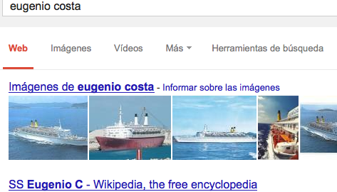
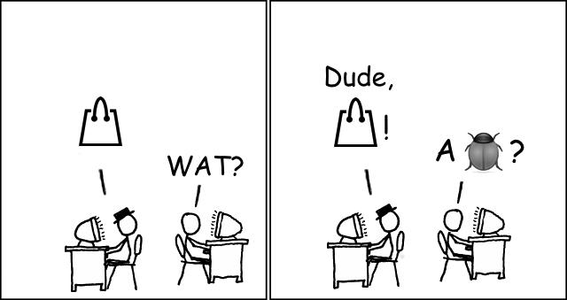
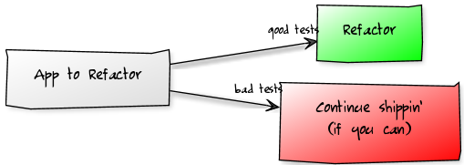

Simplifying
Code
Monster to Elegant
in N<5 steps
Tute Costa - @tutec
We'll learn how to transform this
// fax
if (!empty($this->post['fax'])) {
$site->fax = $this->post['fax'][0];
}
// Facebook & Twitter
if ($this->post['social_media']) {
if (!empty($this->post['facebook'])) {
$facebookURL = $this->post['facebook'];
if (strpos($this->post['facebook'], 'http://') === false) {
$facebookURL = "http://" . $this->post['facebook'];
}
$site->facebook_url = $facebookURL;
}
if (!empty($this->post['twitter'])) {
$twitterURL = $this->post['twitter'];
if (strpos($this->post['twitter'], 'http://') === false) {
$twitterURL = "http://" . $this->post['twitter'];
}
$site->twitter_url = $twitterURL;
}
if (!empty($this->post['googlePlus'])) {
Into THIS
current_user
.public_profiles
.update(params)
About You
About Tute
About Tute
About Tute
About Tute
About Tute
Alright if we'll go all technical I'll say "bug".
2011/2012: ChefSurfing
We wrote so much code.
Every 2 months complexity would bite us.
Stop-the-world. Test && Refactor.
Not predictable. Not sustainable.
2011/2012: Chef Surfing
2013: General Assembly
- Rails app in BAD shape. But well tested.
-
I was told
“refactor allthethings!“
- Improved productivity week after week
- I want to repeat (and improve!) this story.
Precondition:
there's tests


Refactoring Patterns
1. Intention Revealing Method
2. Special Case Object
3. Replace Method with Method Object
4. Service Object
Intention Revealing Method
Why it's called is more important than
how/what it does.
# Remove duplicates?
if hash[row[1]][date] != row[0]
# ...
if remove_duplicates?(row, date)
# ...
def remove_duplicates?(data, date)
Intention Revealing Method
- Add comments if code needs it
- Transform comments into methods
Transform them syntactically, then create the method. - Comments are now code.
Code describes itself.
Intention Revealing Method
git clone http://github.com/tute/
refactoring-workshop
Intention Revealing Method
<5 lines per method
No problem!
Intention Revealing Method
It's arguably the easiest pattern.

But the hardest as well.
Intention Revealing Method
Resources
2. Special Case Objects
No more ifs or trys.
2. Special Case Objects
nil is a troublemaker.
Source of hard to trace exceptions:
Undefined method `email' for nil:NilClass
session[:current_user] # => nil
if (false) then 1 end # => nil
empty_method() # => nil
2. Special Case Objects
A symbol is better than nil:
def current_user
User.find_by_id(params[:id]) ||
:guest_user
end
current_user.email
undefined method `email' for :guest_user:Symbol
2. Special Case Objects
If there may be nil we need to enclose it with an if:
if current_user
"Ohai, #{current_user.email}!"
else
'Ohai, guest!'
end
2. Special Case Objects
Instead of nil, return a new
object
class NullUser
def email
'guest'
end
end
def current_user
User.find(session[:user_id]) ||
NullUser.new
end
"Ohai, #{current_user.email}!"
2. Special Case Objects
Resources
3. Replace Method with Method Object
How to refactor a GIGANTIC method
without getting lost in the cold night.
def row_per_day_format(file_name)
file = File.open file_name, 'r:ISO-8859-1'
# hash[NivelConsistencia][date] = [[value, status]]
hash = { '1' => {}, '2' => {} }
dates = []
str = ''
CSV.parse(file, col_sep: ';').each do |row|
next if row.empty?
next if row[0] =~ /^\/\//
date = Date.parse(row[2])
(13..43).each do |i|
measurement_date = date + (i-13)
# If NumDiasDeChuva is empty it means no data
value = row[7].nil? ? -99.9 : row[i]
status = row[i + 31]
hash_value = [value, status]
dates << measurement_date
hash[row[1]][measurement_date] = hash_value
end
end
dates.uniq.each do |date|
if !hash['1'][date].nil? && hash['2'][date].nil?
# Only 'bruto' (good)
value = hash['1'][date]
str << "#{date}\t#{value[0]}\t#{value[1]}\n"
elsif hash['1'][date].nil? && !hash['2'][date].nil?
# Only 'consistido' (kind of good)
value = hash['2'][date]
str << "#{date}\t#{value[0]}\t#{value[1]}\n"
else
# 'bruto' y 'consistido' (has new and old data)
old_value = hash['1'][date]
new_value = hash['2'][date]
str << "#{date}\t#{new_value[0]}\t#{old_value[1]}\t#{old_value[0]}\n"
end
end
str
end
3. Replace Method with Method Object
1/5. Look carefully at the code. Get scared.
def row_per_day_format(file_name)
file = File.open file_name, 'r:ISO-8859-1'
# hash[NivelConsistencia][date] = [[value, status]]
hash = { '1' => {}, '2' => {} }
dates = []
str = ''
CSV.parse(file, col_sep: ';').each do |row|
next if row.empty?
next if row[0] =~ /^\/\//
date = Date.parse(row[2])
(13..43).each do |i|
measurement_date = date + (i-13)
# If NumDiasDeChuva is empty it means no data
value = row[7].nil? ? -99.9 : row[i]
status = row[i + 31]
hash_value = [value, status]
dates << measurement_date
hash[row[1]][measurement_date] = hash_value
end
end
dates.uniq.each do |date|
if !hash['1'][date].nil? && hash['2'][date].nil?
# Only 'bruto' (good)
value = hash['1'][date]
str << "#{date}\t#{value[0]}\t#{value[1]}\n"
elsif hash['1'][date].nil? && !hash['2'][date].nil?
# Only 'consistido' (kind of good)
value = hash['2'][date]
str << "#{date}\t#{value[0]}\t#{value[1]}\n"
else
# 'bruto' y 'consistido' (has new and old data)
old_value = hash['1'][date]
new_value = hash['2'][date]
str << "#{date}\t#{new_value[0]}\t#{old_value[1]}\t#{old_value[0]}\n"
end
end
str
end
3. Replace Method with Method Object
1/4. Create a class with same initialization arguments as BIG method
class FormatAtoB
def initialize(file_name)
@file_name = file_name
end
end
3. Replace Method with Method Object
2/4. Copy & Paste the method's body in the new class, with no arguments
class FormatAtoB
def initialize(file_name)
@file_name = file_name
end
def row_per_day_format
file = File.open file_name, 'r:ISO-8859-1'
# hash[NivelConsistencia][date] = [[value, status]]
hash = { '1' => {}, '2' => {} }
dates = []
str = ''
CSV.parse(file, col_sep: ';').each do |row|
next if row.empty?
next if row[0] =~ /^\/\//
date = Date.parse(row[2])
(13..43).each do |i|
measurement_date = date + (i-13)
# If NumDiasDeChuva is empty it means no data
value = row[7].nil? ? -99.9 : row[i]
status = row[i + 31]
hash_value = [value, status]
dates << measurement_date
hash[row[1]][measurement_date] = hash_value
end
end
dates.uniq.each do |date|
if !hash['1'][date].nil? && hash['2'][date].nil?
# Only 'bruto' (good)
value = hash['1'][date]
str << "#{date}\t#{value[0]}\t#{value[1]}\n"
elsif hash['1'][date].nil? && !hash['2'][date].nil?
# Only 'consistido' (kind of good)
value = hash['2'][date]
str << "#{date}\t#{value[0]}\t#{value[1]}\n"
else
# 'bruto' y 'consistido' (has new and old data)
old_value = hash['1'][date]
new_value = hash['2'][date]
str << "#{date}\t#{new_value[0]}\t#{old_value[1]}\t#{old_value[0]}\n"
end
end
str
end
end
3. Replace Method with Method Object
3/4. Replace original method with a call to the new class
def row_per_day_format(file_name)
FormatAtoB.new(file_name).row_per_day_format
end
3. Replace Method with Method Object
4/4. Apply "Intention Revealing Method" to the class. Voilà.
class FormatAtoB
def initialize(file_name)
@file_name = file_name
end
def row_per_day_format
load_file_a
format_data
end
private
def load_file_a
# [...]
end
end
3. Replace Method with Method Object
Resources
4. Service Objects
Decoupling different concerns
from chubby classes
4. Service Objects
If we add new functionality to an object:
- It couples to a new dependency
- It loses cohesion
- Testing gets harder and slower
- We can't describe the model without connectors "and"/"or". SRP.
4. Service Objects
If it's a domain concept, it's an Object.
If it's only an algorithm (no state) we call it a Service.
4. Service Objects
Resources
Next Steps
Send Pull Requests to GitHub.
It's a gold mine:
Next Steps: "4 rules"
- Classes of at most 100 lines of code
- Methods of at most 5 lines of code
- A method accepts at most 4 arguments
- A controller instantiates only one object
Why Refactoring
- Not only about aesthetics, but shared understanding, performance.
- We work with the tools with which we work. We are users and creators.
- If I have a bias I choose "over-engineering". "Under-engineering" is risky, expensive, and over-crowded.
El Fin

@tutec - github.com/tute